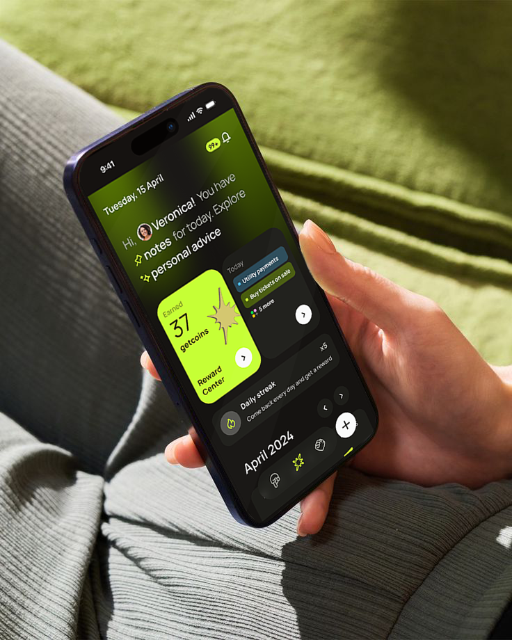
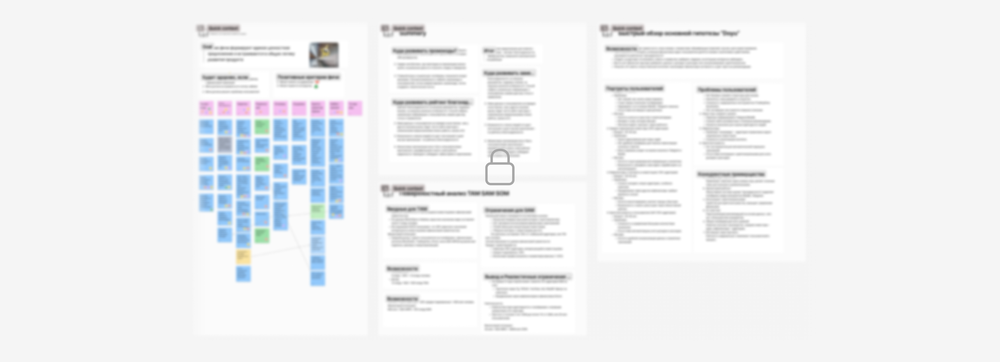
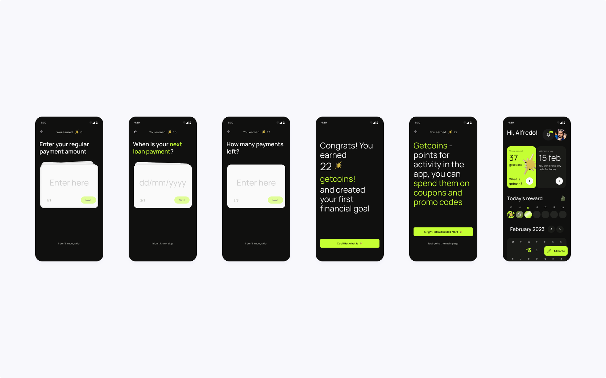
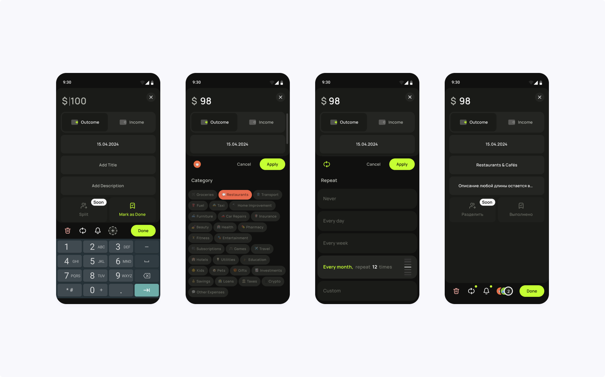
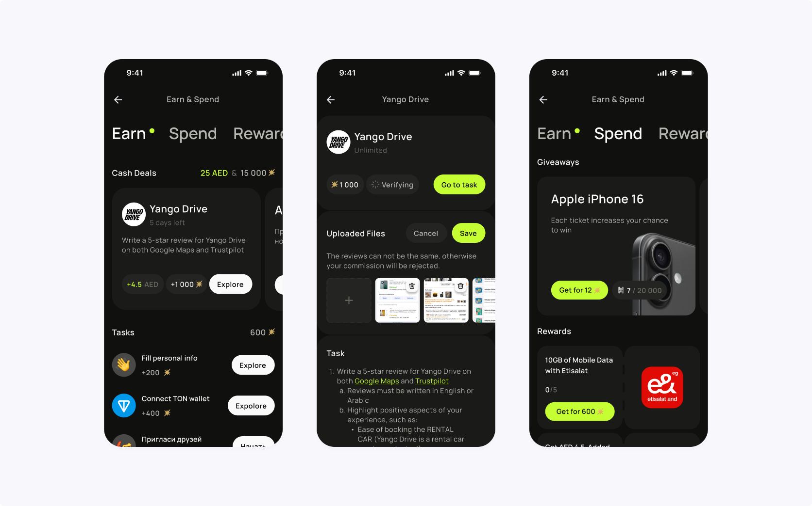
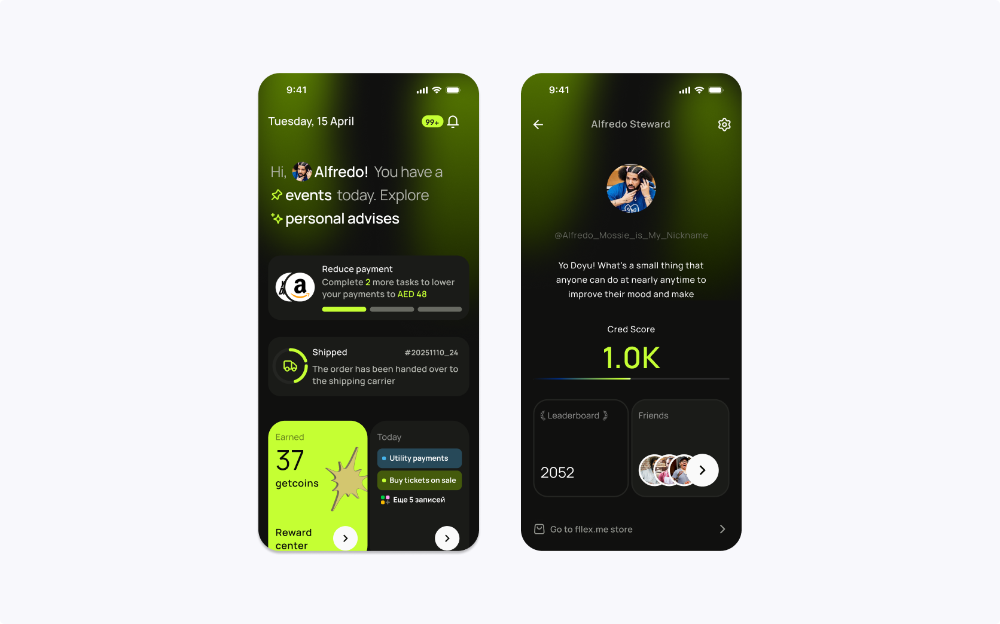
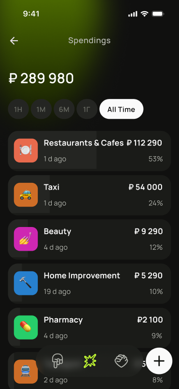

Doyu — поиск продуктовой модели финансового сервиса
Содержание
Моя роль
Product Designer → Product Owner. Отвечал за UX, исследования, продуктовые гипотезы и приоритеты разработки. На старте работал вместе с Product Manager, позже самостоятельно определял бэклог, проектировал ключевые сценарии и координировал их реализацию с командой разработки.
О продукте
Doyu разрабатывался внутри GetMobi как экспериментальное направление. Приложение устанавливалось на устройства через платформу удалённого управления — MDM. Канал распространения уже существовал, но предстояло понять, зачем пользователь будет регулярно открывать приложение.
Мы исследовали положительную мотивацию в финансовых сервисах: как сделать соблюдение платёжной дисциплины полезным для самого пользователя. Из исследований и интервью выросли гипотезы финансового планирования, наград, внутренней валюты и персональных предложений.

Первый MVP
Первая гипотеза: пользователь будет возвращаться в приложение, если оно помогает контролировать финансы и выплаты по займу. Я спроектировал онбординг вокруг первой цели — погашения задолженности за устройство. После регистрации пользователь создавал цель, видел прогресс и получал первые GetCoin — внутреннюю валюту будущей системы мотивации.
Для партнёров предусмотрел настраиваемый баннер со ссылкой на оплату, контактами и сообщениями. Он отображался только их пользователям. MVP давал партнёрам способ встроить приложение в работу, а команде — основу для проверки следующих гипотез.
Онбординг MVP Android

Собственная аудитория
Проверка гипотез зависела от продаж устройств партнёрами: новые пользователи приходили неравномерно. Поддержка нативного Android-приложения дополнительно замедляла выпуск изменений.
Я предложил перейти на веб-приложение PWA и привлечь собственную аудиторию через Telegram Mini Apps. Изучил требования платформы, связался с командой каталога и предложил адаптировать продукт для нового канала.
Команда сосредоточилась на веб-версии, сохранив Android-приложение в виде оболочки для PWA. Мы развили финансовые записи, обучение и онбординг, добавили авторизацию и подключение TON wallet для аудитории Telegram.
Онбординг и финансовые заметки

Экономика GetCoin
Собственная аудитория позволила проверять игровые механики. Я предложил использовать интерес к Telegram-кликерам для исследования экономики GetCoin. В первой версии пользователь зарабатывал валюту кликами; после попадания в каталог Telegram Mini Apps приложение начало органически привлекать аудиторию.
Во второй версии пользователь мог вкладывать GetCoin в игровые финансовые инструменты, открывать уровни и увеличивать пассивный игровой доход. Короткие объяснения знакомили с финансовыми понятиями.
После выпуска второй версии приложение органически привлекло несколько тысяч пользователей. По аналитике отслеживали возвращаемость и переходы из игры в финансовые сценарии; результаты использовали в следующих итерациях.
Игры и финансовые инструменты
Задания и награды
В Telegram появилась аудитория для проверки заданий с вознаграждением. Мы нашли партнёров, готовых оплачивать целевые действия: пользователь получал выплаты или GetCoin и повышал свой рейтинг.
Сценарии займов, скоринга и персональных предложений по-прежнему требовали интеграции с процессами партнёров. Те ожидали подтверждённых результатов до изменения своих процессов.
Это стало одной из предпосылок запуска Fllex — собственного сервиса, в котором команда могла управлять пользовательской воронкой и проверять гипотезы в коммерческих условиях.
Задания и награды

Финансовая репутация
Fllex стал дополнительным источником пользователей и обратной связи. В экосистеме развивался внутренний рейтинг на основе проверки личности, платёжной дисциплины и активности. Он использовался в сценариях доступа к предложениям и специальным условиям.
GetCoin получил новые применения: купоны партнёров и участие в розыгрышах устройств. Для пользователей Fllex появилась возможность уменьшать недельный платёж за выполнение заданий. В глубинных интервью этот сценарий получал наиболее положительную обратную связь — это помогало выбирать направление дальнейшей работы.
Интеграция с Fllex и рейтинг

Параллельно проверяли гипотезу AI-консультанта, который анализировал финансовые записи пользователя. Этот сценарий оставался частью поиска продуктовой модели.
AI-консультант и аналитика трат

Результат
Перевёл Doyu из зависимого от партнёрского канала продукта в самостоятельный PWA и Telegram Mini App и предложил игровые механики вокруг GetCoin. После запуска приложение органически привлекло несколько тысяч пользователей, выросла возвращаемость, а игровые сценарии стали приводить пользователей к финансовым функциям продукта. Аналитика поведения помогла мне определить следующие итерации онбординга, наград и экономики GetCoin.